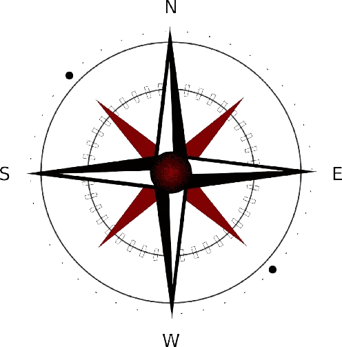

Sebaran Masjid
Wilayah Jawa Tengah

Penjelasan singkat:
Peta ini menampilkan sebaran 30 lokasi masjid di 10 kab/kota Jawa Tengah.
Ikon masjid menunjukkan titik lokasi, sedangkan warna wilayah membedakan
kab/kota. Klik ikon untuk melihat nama, alamat, dan kontak.